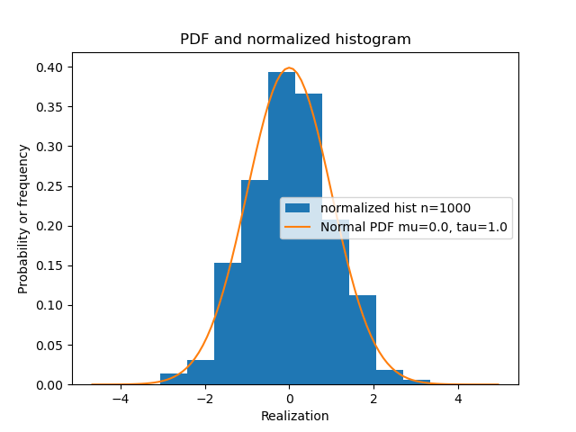
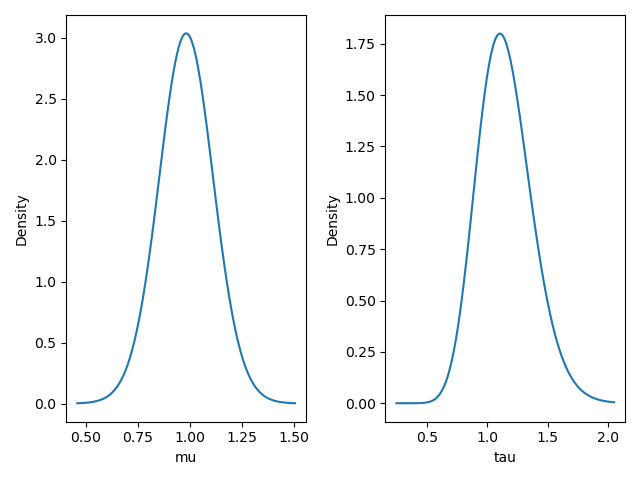

bayesml.normal package
Contents
bayesml.normal package¶
Module contents¶
The normal distribution with the normaml-gamma prior distribution.
The stochastic data generative model is as follows:
\(x \in \mathbb{R}\): a data point
\(\mu \in \mathbb{R}\): a mean parameter
\(\tau \in \mathbb{R}_{>0}\): a precision parameter
The prior distribution is as follows:
\(m_0 \in \mathbb{R}\): a hyperparameter
\(\kappa_0 \in \mathbb{R}_{>0}\): a hyperparameter
\(\alpha_0 \in \mathbb{R}_{>0}\): a hyperparameter
\(\beta_0 \in \mathbb{R}_{>0}\): a hyperparameter
\(\Gamma ( \cdot )\): the gamma function
The posterior distribution is as follows:
\(x^n = (x_1, x_2, \dots , x_n) \in \mathbb{R}^n\): given data
\(m_n \in \mathbb{R}\): a hyperparameter
\(\kappa_n \in \mathbb{R}_{>0}\): a hyperparameter
\(\alpha_n \in \mathbb{R}_{>0}\): a hyperparameter
\(\beta_n \in \mathbb{R}_{>0}\): a hyperparameter
\(\Gamma ( \cdot )\): the gamma function
where the updating rule of the hyperparameters is
The predictive distribution is as follows:
\(x_{n+1} \in \mathbb{R}\): a new data point
\(\mu_\mathrm{p} \in \mathbb{R}\): the hyperparameter of the predictive distribution
\(\lambda_\mathrm{p} \in \mathbb{R}_{>0}\): the hyperparameter of the predictive distribution
\(\nu_\mathrm{p} \in \mathbb{R}_{>0}\): the hyperparameter of the predictive distribution
where the parameters are obtained from the hyperparameters of the posterior distribution as follows:
- class bayesml.normal.GenModel(*, mu=0.0, tau=1.0, h_m=0.0, h_kappa=1.0, h_alpha=1.0, h_beta=1.0, seed=None)¶
Bases:
bayesml.base.GenerativeThe stochastic data generative model and the prior distribution
- Parameters
- mufloat, optional
a real number, by default 0.0
- taufloat, optional
a positibe real number, by default 1.0
- h_mfloat, optional
a real number, by default 0.0
- h_kappafloat, optional
a positibe real number, by default 1.0
- h_alphafloat, optional
a positibe real number, by default 1.0
- h_betafloat, optional
a positibe real number, by default 1.0
- seed{None, int}, optional
A seed to initialize numpy.random.default_rng(), by default None
Methods
Generate the parameter from the prior distribution.
gen_sample(sample_size)Generate a sample from the stochastic data generative model.
Get the hyperparameters of the prior distribution.
Get the parameter of the sthocastic data generative model.
load_h_params(filename)Load the hyperparameters to h_params.
load_params(filename)Load the parameters saved by
save_params.save_h_params(filename)Save the hyperparameters using python
picklemodule.save_params(filename)Save the parameters using python
picklemodule.save_sample(filename, sample_size)Save the generated sample as NumPy
.npzformat.set_h_params(h_m, h_kappa, h_alpha, h_beta)Set the hyperparameters of the prior distribution.
set_params(mu, tau)Set the parameter of the sthocastic data generative model.
visualize_model([sample_size, hist_bins])Visualize the stochastic data generative model and generated samples.
- set_h_params(h_m, h_kappa, h_alpha, h_beta)¶
Set the hyperparameters of the prior distribution.
- Parameters
- h_mfloat
a real number
- h_kappafloat
a positibe real number
- h_alphafloat
a positibe real number
- h_betafloat
a positibe real number
- get_h_params()¶
Get the hyperparameters of the prior distribution.
- Returns
- h_paramsdict of {str: float}
"h_m": The value ofself.h_m"h_kappa": The value ofself.h_kappa"h_alpha": The value ofself.h_alpha"h_beta": The value ofself.h_beta
- gen_params()¶
Generate the parameter from the prior distribution.
The generated vaule is set at
self.muandself.tau.
- set_params(mu, tau)¶
Set the parameter of the sthocastic data generative model.
- Parameters
- mufloat
a real number \(mu \in \mathbb{R}\)
- taufloat, optional
a positibe real number
- get_params()¶
Get the parameter of the sthocastic data generative model.
- Returns
- paramsdict of {str:float}
"mu": The value ofself.mu"tau": The value ofself.tau
- gen_sample(sample_size)¶
Generate a sample from the stochastic data generative model.
- Parameters
- sample_sizeint
A positive integer
- Returns
- xnumpy ndarray
1 dimensional array whose size is
sammple_size.
- save_sample(filename, sample_size)¶
Save the generated sample as NumPy
.npzformat.It is saved as a NpzFile with keyword: “x”.
- Parameters
- filenamestr
The filename to which the sample is saved.
.npzwill be appended if it isn’t there.- sample_sizeint
A positive integer
See also
- visualize_model(sample_size=1000, hist_bins=10)¶
Visualize the stochastic data generative model and generated samples.
- Parameters
- sample_sizeint, optional
A positive integer, by default 20
- hist_binsfloat, optional
A positive float, by default 10
Examples
>>> from bayesml import normal >>> model = normal.GenModel() >>> model.visualize_model()
- class bayesml.normal.LearnModel(h0_m=0.0, h0_kappa=1.0, h0_alpha=1.0, h0_beta=1.0)¶
Bases:
bayesml.base.Posterior,bayesml.base.PredictiveMixinThe posterior distribution and the predictive distribution.
- Parameters
- h0_mfloat, optional
a real number, by default 0.0
- h0_kappafloat, optional
a positive real number, by default 1.0
- h0_alphafloat, optional
a positive real number, by default 1.0
- h0_betafloat, optional
a positive real number, by default 1.0
- Attributes
- hn_mfloat
a real number
- hn_kappafloat
a positive real number
- hn_alphafloat
a positive real number
- hn_betafloat
a positive real number
- p_mufloat
a real number
- p_lambdafloat
a positibe real number
- p_nufloat
a positibe real number
Methods
Calculate the parameters of the predictive distribution.
estimate_interval([credibility])Credible interval of the parameter.
estimate_params([loss, dict_out])Estimate the parameter of the stochastic data generative model under the given criterion.
Get the initial values of the hyperparameters of the posterior distribution.
Get the hyperparameters of the posterior distribution.
Get the parameters of the predictive distribution.
load_h0_params(filename)Load the hyperparameters to h0_params.
load_hn_params(filename)Load the hyperparameters to hn_params.
make_prediction([loss])Predict a new data point under the given criterion.
Overwrite the initial values of the hyperparameters of the posterior distribution by the learned values.
pred_and_update(x[, loss])Predict a new data point and update the posterior sequentially.
Reset the hyperparameters of the posterior distribution to their initial values.
save_h0_params(filename)Save the hyperparameters using python
picklemodule.save_hn_params(filename)Save the hyperparameters using python
picklemodule.set_h0_params(h0_m, h0_kappa, h0_alpha, h0_beta)Set the hyperparameters of the prior distribution.
set_hn_params(hn_m, hn_kappa, hn_alpha, hn_beta)Set updated values of the hyperparameter of the posterior distribution.
Update the hyperparameters of the posterior distribution using traning data.
Visualize the posterior distribution for the parameter.
- set_h0_params(h0_m, h0_kappa, h0_alpha, h0_beta)¶
Set the hyperparameters of the prior distribution.
- Parameters
- h0_mfloat
a real number
- h0_kappafloat
a positive real number
- h0_alphafloat
a positive real number
- h0_betafloat
a positive real number
- get_h0_params()¶
Get the initial values of the hyperparameters of the posterior distribution.
- Returns
- h0_paramsdict of {str: float}
"h0_m": The value ofself.h0_m"h0_kappa": The value ofself.h0_kappa"h0_alpha": The value ofself.h0_alpha"h0_beta": The value ofself.h0_beta
- set_hn_params(hn_m, hn_kappa, hn_alpha, hn_beta)¶
Set updated values of the hyperparameter of the posterior distribution.
- Parameters
- hn_mfloat
a real number
- hn_kappafloat
a positive real number
- hn_alphafloat
a positive real number
- hn_betafloat
a positive real number
- get_hn_params()¶
Get the hyperparameters of the posterior distribution.
- Returns
- hn_paramsdict of {str: float}
"hn_m": The value ofself.hn_m"hn_kappa": The value ofself.hn_kappa"hn_alpha": The value ofself.hn_alpha"hn_beta": The value ofself.hn_beta
- reset_hn_params()¶
Reset the hyperparameters of the posterior distribution to their initial values.
They are reset to self.h0_m, self.h0_kappa, self.h0_alpha, and self.h0_beta. Note that the parameters of the predictive distribution are also calculated from self.h0_m, self.h0_kappa, self.h0_alpha, and self.h0_beta.
- overwrite_h0_params()¶
Overwrite the initial values of the hyperparameters of the posterior distribution by the learned values.
They are overwritten by self.hn_m, self.hn_kappa, self.hn_alpha, and self.hn_beta. Note that the parameters of the predictive distribution are also calculated from self.hn_m, self.hn_kappa, self.hn_alpha, and self.hn_beta.
- update_posterior(x)¶
Update the hyperparameters of the posterior distribution using traning data.
- Parameters
- xnumpy.ndarray
All the elements must be natural number.
- estimate_params(loss='squared', dict_out=False)¶
Estimate the parameter of the stochastic data generative model under the given criterion.
Note that the criterion is applied to estimating
muandtauindependently. Therefore, a tuple of the student’s t-distribution and the gamma distribution will be returned when loss=”KL”- Parameters
- lossstr, optional
Loss function underlying the Bayes risk function, by default “squared”. This function supports “squared”, “0-1”, “abs”, and “KL”.
- dict_outbool, optional
If
True, output will be a dict, by defaultFalse.
- Returns
- estimatestuple of {float, None, or rv_frozen}
mu_hat: the estimate for mutau_hat: the estimate for tau
The estimated values under the given loss function. If it is not exist, None will be returned. If the loss function is “KL”, the posterior distribution itself will be returned as rv_frozen object of scipy.stats.
- estimate_interval(credibility=0.95)¶
Credible interval of the parameter.
- Parameters
- credibilityfloat, optional
A posterior probability that the interval conitans the paramter, by default 0.95
- Returns
- (mu_lower, mu_upper),(tau_lower, tau_upper): float
The lower and the upper bounds of the intervals
- visualize_posterior()¶
Visualize the posterior distribution for the parameter.
Examples
>>> from bayesml import normal >>> gen_model = normal.GenModel(mu=1.0,tau=1.0) >>> learn_model = normal.LearnModel() >>> learn_model.update_posterior(x) >>> learn_model.visualize_posterior()
- get_p_params()¶
Get the parameters of the predictive distribution.
- Returns
- p_paramsdict of {str: float}
"p_mu": The value ofself.p_mu"p_lambda": The value ofself.p_lambda"p_nu": The value ofself.p_nu
- calc_pred_dist()¶
Calculate the parameters of the predictive distribution.
- make_prediction(loss='squared')¶
Predict a new data point under the given criterion.
- Parameters
- lossstr, optional
Loss function underlying the Bayes risk function, by default “squared”. This function supports “squared”, “0-1”, “abs”, and “KL”.
- Returns
- Predicted_value{int, numpy.ndarray}
The predicted value under the given loss function. If the loss function is “KL”, the predictive distribution itself will be returned as numpy.ndarray.
- pred_and_update(x, loss='squared')¶
Predict a new data point and update the posterior sequentially.
- Parameters
- xint
It must be natural number
- lossstr, optional
Loss function underlying the Bayes risk function, by default “squared”. This function supports “squared”, “0-1”, “abs”, and “KL”.
- Returns
- Predicted_value{int, numpy.ndarray}
The predicted value under the given loss function. If the loss function is “KL”, the predictive distribution itself will be returned as numpy.ndarray.